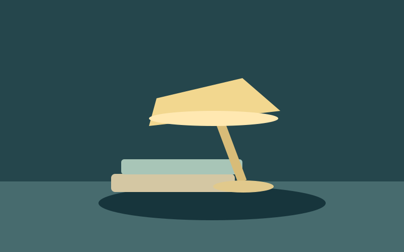

Living Frame · source / local alpha
Eight ways to frame the story
Keep the media and its meaning. Choose a treatment only where it helps.
Original media is readable before JavaScript.
Product hero

Editorial image

Keep the article, caption and credits in HTML.
Video cover
Gallery card
Field notes
This card uses a real link and native disclosure. The effect does not implement navigation.
Before / after comparison
Labels and view choices carry the comparison. Dragging is not required.
Portrait treatment
Ambient media
Media in flat spatial panels
Real pinned Space runtime in compact/flat layout. Projected pointers, 3D transforms and full device/composition qualification are not demonstrated.
Source unavailable. The caption and original description remain available; restore the source to retry.
Effect pause freezes shader phase, not source video. Original view only removes the effect. Video Play/Pause owns playback. Reduced preference uses original stills. All media and system fonts are local; no external services.